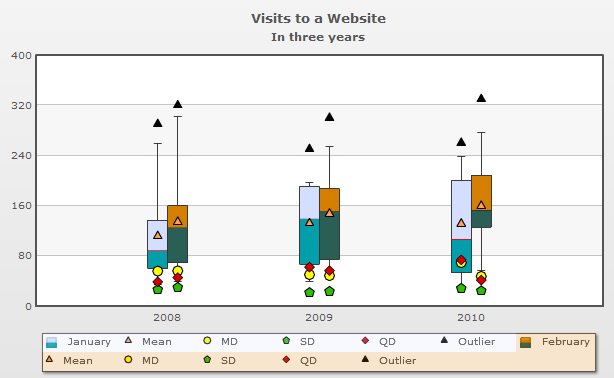

Box and whisker chart is a statistical chart which is used to examine and summarize a given set of data. It draws the statistical conclusion using five number summary principle. The box and whisker chart is very useful to observe the mean, median, upper and lower quartiles, deviations, etc. for a huge set of data. Box and whisker charts are most popularly used in chemical industries, weapon industries and many more.
Key features of this chart are:
- Calculates the mean, median, upper and lower quartiles and the minimum and maximum numbers for a given set of data
- Calculates and displays the mean deviation, standard deviation and the quartile deviation of a given set of data
- Interactive legend is used to distinguish between two datasets by highlighting each dataset with different color strips
- The mean and the deviations of multiple sets of data can be connected by drawing a line
- Any value which is not residing within the set of values provided can be displayed as outliers
A basic Box and Whisker chart looks as under:
And the data for same can be listed as under:
<chart caption='Visits to a Website' subCaption='In three years'>
<categories>
<category label='2008' />
<category label='2009' />
<category label='2010' />
</categories>
<dataset seriesName="January">
<set value='160,133,35,67,89,107,59,133,90,207,47,79' />
<set value='139,67,75,114,39,67,141,201,138,49,22,109' />
<set value='200,107,197,259,23,36,97,211,68,49,199,105' />
</dataset>
</chart>
{
"chart":{
"caption":"Visits to a Website",
"subcaption":"In three years"
},
"categories":[{
"category":[{
"label":"2008"
},
{
"label":"2009"
},
{
"label":"2010"
}
]
}
],
"dataset":[{
"seriesname":"January",
"data":[{
"value":"160,133,35,67,89,107,59,133,90,207,47,79"
},
{
"value":"139,67,75,114,39,67,141,201,138,49,22,109"
},
{
"value":"200,107,197,259,23,36,97,211,68,49,199,105"
}
]
}
]
}
Three out of five summary numbers are displayed by default (median, minimum number and maximum number). You can also display the other two five summary numbers (upper and lower quartiles). A sample chart with the quartiles displayed is given below:

Apart from the five summary numbers the box and whisker chart allows you to display the following statistical figures:
A sample chart displaying all the statistical numbers are show below:
In the following pages we will discuss how to create a simple Box and Whisker chart and add more features to it.